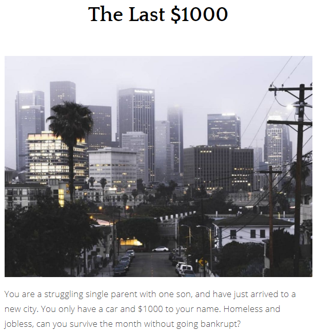

The AdventureText
A game revolving around financial decisions from the perspective of a struggling single parent.

Click here to check it out!
I selected my AdventureText because I had a lot of fun creating the game and I am really happy about the final product! Learning a new scripting language and making up scenarios for the game was a great experience. While designing the game, I followed much of the advice from John Ferrara’s article “Games for Persuasion”.
Firstly, I made sure that all choices had its advantages and disadvantages, so that there are no "obvious" choices.
As Ferrara says, "If there is no benefit to making the wrong choice, then there is no choice at all." (301).
This is why I implemented a happiness system; the player has to choose whether to save their money and do something that would lessen their quality of life, or spend money to improve it.
In addition, I closely followed the five guidelines that Ferrara explains on pages 298-302, which are...
- "Defining a Core Message": I give a brief summary in the opening paragraph about the financial decisions that the player must undertake.
- "Tie the Message to Strategy": I give the player difficult choices which directly affect the amount of money that the player has.
- "Enable Self-Directed Discovery": I allow the user to learn what happens when they make certain decisions, such as one that makes them bankrupt.
- "Offer Meaningful Choices": As mentioned previously, my choices all have their advantages or disadvantages on the player's money and quality of life.
- "Keep it Real": My game mimics decisions that a person struggling financially in real life may have to make.